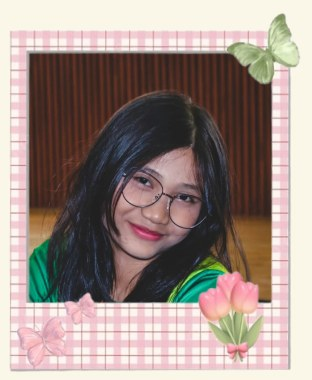
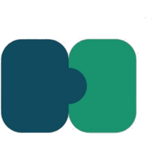
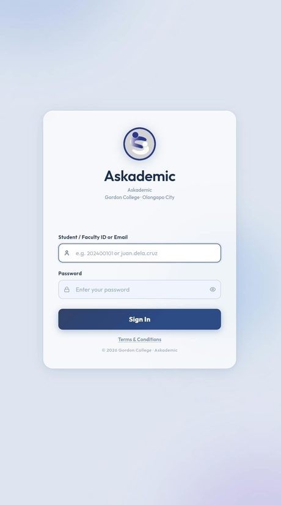
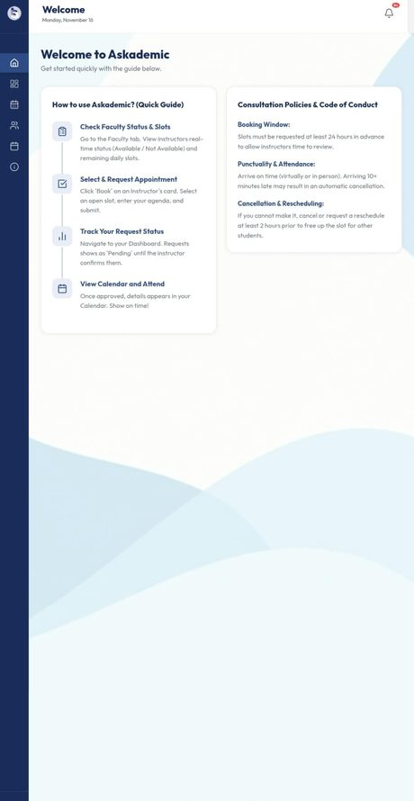
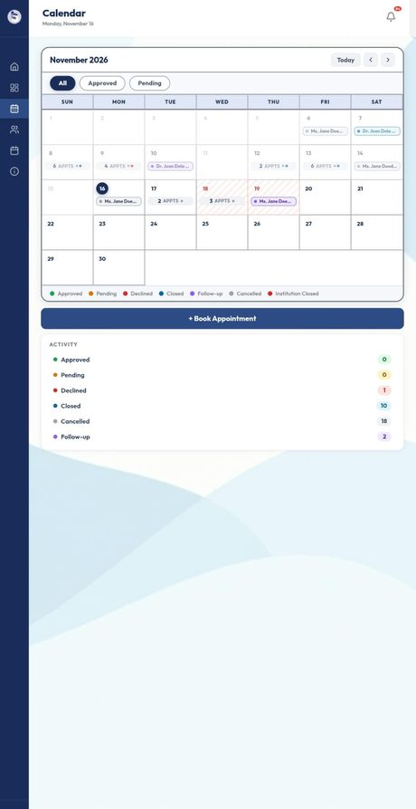
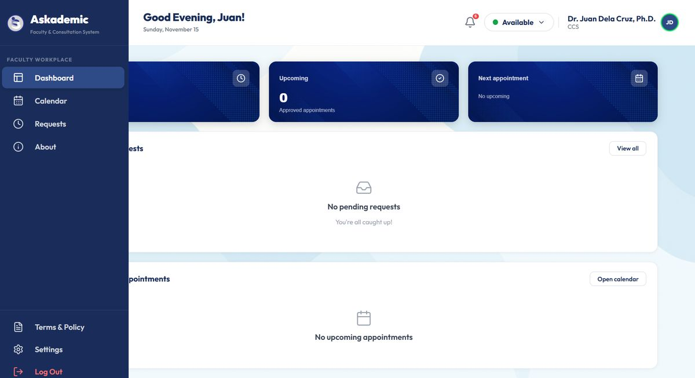

Askademic
A campus-based system that allows student to instructor appoint consultation.

I am Erica Monton, a computer science student who is passionate about biology, data science and research. I am eager to gain experience in the field of biotechnology.
I approach every project with a problem-solving mindset, using existing algorithms to transform difficult problems into solvable ones.
My goal is to master my skills in data science and programming and excel in the field of bioinformatics.
Python · C++ · Google Colab · Jupyter Notebook
A campus-based system that allows student to instructor appoint consultation.
A community-based lost and found system that allows automatic matching of item reports using Levenshtein algorithm and rule-based algorithm.
A web system where students request consultation slots, instructors approve them and record what happened, and the department can review how consultations go.
Move your pointer over the devices to tilt them. Pick a tab to change the screen.
Students can’t tell when an instructor is really available, instructors have no record of consultations that happened or didn’t, and the department has no evidence of how consultations go.
Make booking clear, close every consultation with a recorded outcome, and give the department a fair basis for evaluating instructors.
Project lead, documentation lead, and design assistance.
We followed the five stages of design thinking. Pick a stage to see what we did there, what we found, and the decisions it led to.
The team already assumed that our target users experienced the problem. To check, we ran a survey and interviews with the college’s faculty members and students. Once we had the data, the assumption became a confirmed hypothesis.
Students can’t tell when an instructor is actually free, so they chase them through chat or the faculty room and often find no one there. Every screen shows real, bookable slots and clear request statuses, so a student never has to guess.
Part-timers have little time to update their availability every day, which leaves schedules outdated and students distrustful of the system. Setting availability is quick and recurring by default, with the department’s blocked dates applied automatically so instructors only handle exceptions.
Without an outcome, the department has no evidence of how consultations go, and a no-show looks the same as a held session. Every appointment ends in a recorded outcome (“Closed · Held” or “Closed · No-show”), so nothing is left ambiguous.
Program chairs and the department dean teach too, so one account has to act as both a manager and an instructor without conflicts of interest. A role switcher separates the two views, and ratings of a chair or the department dean route to the next level up.
We mapped one journey for each side of the booking. The curve is a rough guess of how the person feels at each step, and the last line of each step is the opportunity we turned into a feature.
This was our first prototype, then called FACS (Faculty Appointment and Consultation System). It had the full student booking flow, and it is what the final defense panel reviewed. Tap a screen to enlarge it.
We didn’t run lab sessions. Our usability studies were two rounds of review by the people who would judge and use the system: the final defense panel on May 8, 2026, and a follow-up from the faculty representative. Each round gave us concrete findings about how the design worked for real roles.
Several students can want the same last slot. Students can now request it, and once the instructor approves one, the others are cancelled automatically.
A no-show had no way to end a record. Instructors can mark “No-show,” and “Completed” became “Closed” so it matches the remark chosen.
The hierarchy wasn’t clear. Program chairs were view-only and the department dean’s role was missing, so we built interfaces for both.
Availability should be trackable per day. The calendar now works like a familiar month view, with appointment counts per day and long names shortened with an ellipsis.
A no-show needs a required note and clearer features. The no-show flow is being tightened so the outcome is obvious to everyone.
Records need limits and a way out. Chairs and the department dean get Reports, and history limits and export are being finalized.
Smaller findings were fixed too: a blurred background behind dialogs, a subtle wave background, and a calmer, more polished sign in.
After the revision round we refined the look and the logic. Each row puts the first design next to the system we deployed, with what changed and why.
More screens from the deployed system, plus the review views for program chairs and department deans. Tap to enlarge.
The student rates the consultation, and the program chair and department dean review the results.
Status badges and calendar legends carry words as well as color: Pending, Approved, Closed, Declined, Follow-up. A color-blind user can still tell them apart.
Every field has a visible label and an example, the active field gets a clear outline, and the password can be revealed so mistakes are easy to catch.
Dark navy text on light surfaces, generous spacing, and big touch targets. On phones, the navigation pairs each icon with a text label.
Askademic replaces chasing instructors with bookable slots and a recorded outcome for every consultation. Its dashboard already tracks 46 consultation requests across 8 faculty and 5 students, with 14 closed with a recorded outcome.
Understand how an organization is structured before designing for it. We built an admin because it was a familiar pattern, but the panel’s question exposed that the real structure was a chain of review: instructor, program chair, then department dean. As project lead and documentation lead, I also learned that keeping the diagrams, the database and the screens in agreement matters as much as the screens themselves.
A lost-and-found system where residents report an item, the system suggests likely matches, and barangay staff confirm them.

Move your pointer over the devices to tilt them. Pick a tab to change the screen. All reports shown are simulated data from the study.
Reports sit in a logbook or a chat thread, and matching is done by eye. A staff member has to remember what was reported weeks ago and hope the descriptions line up.
Keep every report in one place and rank possible matches by score, so staff check the best candidates first and can see why they were suggested.
Researcher and developer.
The project moved through five stages. Pick a stage to see what we did, what we found, and the decisions it led to.
We started from the assumption that matching lost and found items was slow. To check it, we surveyed 10 barangay staff and 30 residents. The survey asked how reports are recorded, how matches are found, and what each group would want from an online form.
Nine of 10 staff record reports in a logbook, and one uses Facebook or messaging apps. Staff agreed that matches get missed because reports are in different places or formats. Tugma keeps every report in one list.
Six of 10 staff said finding a possible match takes a day or more, and two said matching is not done. Tugma compares a new report with every other report straight away.
All 10 staff rated this 4 or 5: describing an item in words makes it hard to tell whether two reports are about the same thing. Tugma scores each description word by word instead of asking a person to judge it by eye.
Of the 16 residents who had lost or found an item, seven had no match yet. Staff get a ranked shortlist, so the likeliest match is the first one they check.
They enter and check reports during a busy day. They need a short list of candidates, a reason for each suggestion, and the final say on whether two reports are a match.
They know the item, where they lost it and roughly when. They need a short form they can finish on a phone, and they should not have to know how the matching works.
Every pair of one lost and one found report gets a score from 0 to 100. The score is the sum of five parts, and each part has its own weight.
Scores are grouped into tiers so staff can scan quickly: High from 85, Medium from 70 to 84, and Low below 70. A score of 70 is the cutoff we used when we measured accuracy.
We first built a simple version (V1) to use as a baseline, then improved it (V2) and measured the difference.
We used 50 simulated lost reports and 50 simulated found reports, with 35 true pairs, which gives 2,500 possible pairs. We tuned the weights on 40 reports and kept the other 60 as a test set. The numbers below come from that test set at the 70 cutoff.
The difference holds up statistically: a Wilcoxon signed-rank test across 30 lost reports gave p = 0.018, with V2 making fewer errors on 10 reports and V1 on 2.
When each test lost report is compared with all 50 found reports, V2 precision falls to about 66% and it still makes 10 wrong suggestions. The result above is the cleaner setting, so I report both.
The reports were written for the study, so real reports may be messier. Recall did not improve either: V1 and V2 both missed 2 true pairs.
We used the Technology Acceptance Model on a 5-point scale. Staff rated usefulness 4.64, ease of use 4.40 and intention to use 4.75. Residents rated the system 4.23 overall, with ease of use the lowest of their scores at 3.96, so the resident form is where I would improve first.
Screens from the working system. The reports shown are simulated data from the study. Tap to enlarge.
For any report, staff open a ranked list of candidates with a score, a tier and a breakdown of the five parts. They confirm a match only after checking it themselves.
Lost-and-found reports include names and phone numbers, so the way the data is reached mattered as much as the matching.
Names and contact numbers are shown only to signed-in barangay staff. Residents use the report form and never see other people’s reports.
The browser talks to a small server on Vercel, and the server talks to the database. The database’s private key stays on the server, and the browser only holds the key used to sign in.
Some checks are still on my list, such as stricter database access rules and tests for injection and script attacks. I would finish these before any real deployment.
On the test set, the improved matching raised precision from 51% to 79% and F1 from 66% to 84%, without losing recall. Staff rated the system 4.64 for usefulness.
A baseline is what makes an improvement believable. Building the simple version first let me show that the word-by-word rules were better, rather than only claim it. I also learned to report the weaker result next to the good one: the larger pool showed where the system still makes mistakes, and that is more useful than a single clean number.
© erica monton



